Contents
To discuss sample corrections, specifically the absorption and multiple scattering, we must first define terms pertinent to the calculations of these corrections.
 )¶
)¶First, we define the total cross section per atom, which for the majority of elements, is equal to the sum of the element’s scattering and absorption cross sections:
(1)
where  is the neutron wavelength,
is the neutron wavelength,  , and
, and
 is the differential cross-section which is the cross-section (
is the differential cross-section which is the cross-section ( ) per solid angle (
) per solid angle ( ).
).
 )¶
)¶Typically, the scattering cross section is directly found from tabulated single atom values [1] and with good approximation, assumed independent of wavelength.
If we observe the equation above for , we have that it is equal to the integration of the differential cross section. Yet, for the typical diffraction experiment,
the differential cross-section is exactly the quantity we wish to measure. Thus, to proceed one could chose from the following:
(very difficult to do exactly since instruments typically cannot cover all  of
of  ). and subtract a known value for
). and subtract a known value for  (also not typical). [1] (bingo!).
(also not typical). [1] (bingo!).For the energies used to measure structure of materials, is to
reasonable approximation independent of . However, exceptions include nuclear resonances, strong Bragg scattering as in beryllium, and significant inelastic effects. [2]
)¶For the absorption cross section, again typically the cross section is used from the same tabulated single atom values [1] but is only valid for the reference wavelength, 1.7982 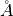,
at which it was measured at. Thus, we can look up the value of  . Yet, the absorption cross section is a linear function of wavelength (away from nuclear resonances).
Thus, we can calculate the absorption cross section at other wavelengths from:
. Yet, the absorption cross section is a linear function of wavelength (away from nuclear resonances).
Thus, we can calculate the absorption cross section at other wavelengths from:
(2)
NOTE: In Mantid, the reference wavelength is defined as a variable ReferenceLambda in NeutronAtom.cpp [3]. This variable should be used for consistency in all sample correction algorithms that
calculate 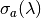 from this reference wavelength.
 )¶
)¶The attenuation length is defined as:
(3)
where  is the atomic number density of the sample.
Note that is not the crystallographic or microscopic density of a unit cell but the macroscopic density of the bulk sample. If one were to measure a powder sample, the powder would not pack
perfectly and thus there would be a given packing fraction,
is the atomic number density of the sample.
Note that is not the crystallographic or microscopic density of a unit cell but the macroscopic density of the bulk sample. If one were to measure a powder sample, the powder would not pack
perfectly and thus there would be a given packing fraction,  . Then, if the microscopic density is given as
. Then, if the microscopic density is given as  , it is related to via:
, it is related to via:
(4)
The definition of is used throughout the rest of this documentation.
Methods for calculating the absorption corrections (and also the multiple scattering) generally fall into these categories:
The analytical and numerical integration methods generally provide a quicker solution, but at the expense of having to make assumptions about sample geometries and scattering processes that make them less flexible than the Monte Carlo techniques (integration and ray-tracing). However, in many cases analytical and numerical integration solutions are satisfactory and allow much more efficient analysis of results.
Determination of the structure and/or dynamics of samples depends on the analysis of single scattering data.
Overall, the absorption correction is a factor,  , such that 0 < < 1 . It is a factor that accounts for the loss of intensity from single scattering in the sample (or other component in the instrument).
due to both scattering and capture events in the sample. The factor is divided by the measured intensity. Thus, the absorption correction has an overall multiplicative enhancement of the measured intensity.
, such that 0 < < 1 . It is a factor that accounts for the loss of intensity from single scattering in the sample (or other component in the instrument).
due to both scattering and capture events in the sample. The factor is divided by the measured intensity. Thus, the absorption correction has an overall multiplicative enhancement of the measured intensity.
The figure shows how a general single scattering process might occur. The neutron travels
a certain distance  through the sample before a single scattering event occurs in
the volume element
through the sample before a single scattering event occurs in
the volume element  of the sample. Then, the neutron travels a final length
of the sample. Then, the neutron travels a final length  before leaving the sample and being picked up by
a detector.
before leaving the sample and being picked up by
a detector.

To formulate the absorption sample correction, first, we assume we have a homogeneous sample of a given shape that is fully illuminated by the incident beam.
Then, the number of neutrons per unit solid angle scattered once by a volume element of the sample and seen by a detector is given by:
(5)![dI_1(\theta) = J_0 \rho \frac{d\sigma}{d\Omega} \left( \theta \right) exp \left[ -\mu (\lambda_1) l_1 + - \mu (\lambda_2) l_2 \right] dV](../_images/math/8f22d38d10d1161994e47d5d90ed9e9fcdd03d32.png)
where  is the incident flux, is the atomic number density,
is the incident flux, is the atomic number density,  is the differential cross-section,
and are the path lengths for incident neutrons to and from to the detector, respectively,
and 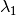 and
is the differential cross-section,
and are the path lengths for incident neutrons to and from to the detector, respectively,
and 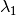 and  are the incident and scattered wavelength, respectively.
are the incident and scattered wavelength, respectively.
Yet, this is only the contribution from a single volume element, or voxel, of the sample volume that contributes to a detector. Thus, if we integrate over the entire sample volume (all the voxels),
we arrive at the total intensity of neutrons scattered once through an angle  and then leaving the sample without further scattering, given as:
and then leaving the sample without further scattering, given as:
(6)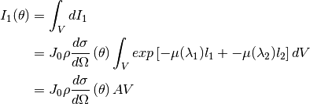
In the last part of the equation for  , we have introduced the term , given as:
, we have introduced the term , given as:
(7)![A = \frac{1}{V} \int_{V} exp \left[ -\mu (\lambda_1) l_1 + -\mu (\lambda_2) l_2 \right] dV](../_images/math/78d2b8e6cd4b5b61e1c313b55ef57098bb63c543.png)
This is the basic absorption correction for a single sample volume (i.e. no container included, no partial correction factors, no partial illumination, etc.).
NOTE: In some references, this term is instead defined as the inverse  . Some references use the notation here: [2] [4] [5] [7] [8] and [10], while others use the inverse notation: [6].
. Some references use the notation here: [2] [4] [5] [7] [8] and [10], while others use the inverse notation: [6].
For elastic scattering, = = and we can simplify to:
(8)![A_{elastic} = \frac{1}{V} \int_{V} exp \left[ -\mu (\lambda) \left( l_1 + l_2 \right) \right] dV](../_images/math/d23acf5d32a8eb0ac2299329a85052e303bf5b96.png)
When the scattering of a sample (liquid, powder, gas, etc.) is measured, the sample is often held in a thick sample container. This container contributes significantly to the measured neutron beam. Often the empty container is measured and the signal from the container ( ) subtracted from the signal of sample plus container (
) subtracted from the signal of sample plus container ( ).
).
The Paalman-Pings formalism (PPF) [4] provides a framework for correcting for individual component absorption contributions, or the partial absorption correction factors, when a sample is measured in a container and, possibly, one or more sample environments. PPF builds on the earlier work of Ritter [5], who described a graphical approach of accounting for partial absorption correction factors. The PPF goes beyond the work of Ritter in two important ways
In their analysis, Paalman and Pings show that the latter point is not generally of consequence since this region only exists for a few angstroms in most materials, but the ability to account for it is re-assuring. The sample/container interaction could be of significant importance in cases where the container and sample are single crystal or poly-crystalline.
Generally, the container measurement (neglecting multiple scattering and inelastic effects) is written:
(9)
 theoretical intensity from the isolated container.
theoretical intensity from the isolated container. is the absorption factor for scattering in the container region and absorption in the container.
is the absorption factor for scattering in the container region and absorption in the container.The full PPF for the sample and container measurement (neglecting multiple scattering and inelastic effects) is written:
(10)
. theoretical intensity from the isolated sample. theoretical intensity from the isolated container.
theoretical intensity from the isolated sample. theoretical intensity from the isolated container. is the absorption factor for scattering in the sample region and absorption by the sample and container.
is the absorption factor for scattering in the sample region and absorption by the sample and container. is the absorption factor for scattering in the container region and absorption by the sample and container.
is the absorption factor for scattering in the container region and absorption by the sample and container. is the absorption factor for scattering in the correlated sample and container interface and absorption by the sample and container.
is the absorption factor for scattering in the correlated sample and container interface and absorption by the sample and container.As discussed above, the final term in this expression is generally neglected.
The numerical and Monte Carlo integration approaches can be further extended in a number of ways:
as 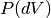 and 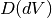, respectively. These can then be included into Eq. (7) as:(11)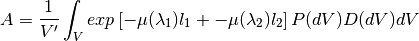
where  is the effective volume of the cylinder in the beam.
is the effective volume of the cylinder in the beam.
Indicates the energy modes that the algorithm can accommodate:
| Legend for Energy Mode | |
|---|---|
| E | Elastic |
| D | Direct |
| I | Indirect |
Indicates the technique used for calculating the absorption correction:
| Legend for Technique | |
|---|---|
| A | Analytical |
| NI | Numerical Integration |
| MC | Monte Carlo Integration |
Options that describe what functions the algorithm is capable of and the output types:
| Legend for Functions | |
|---|---|
| L | Loads correction from file |
| MS | Multiple scattering correction calculated |
| FI | Full illumination of sample by beam |
| PI | Full or partial illumination of sample by beam |
| W | Outputs a corrected sample workspace |
| A | Absorption correction calculated |
| A+ | Calculates both sample and container absorption corrections ( , ,  ) ) |
| A++ | Calculates full set of partial absorption corrections (,  , , 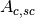) , , 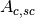) |
| Algorithm | Energy Mode | Technique | Geometry | Input Units | Functions | Notes |
|---|---|---|---|---|---|---|
| AbsorptionCorrection | E,D,I | NI | Any Shape | Wavelength | A,PI | Approximates sample shape using cuboid mesh of given element size
Base class: AbsorptionCorrection
|
| AnnularRingAbsorption | E,D,I | MC | Annular / Hollow Cylinder | Wavelength | A,PI | Wrapper for MonteCarloAbsorption for hollow cylindrical sample |
| AnvredCorrection | E | A | Sphere | Wavelength or TOF | A,FI,W | Absorption for spheres with additional corrections in ANVRED program from ISAW:
- weight factors for pixels of instrument
- correct for the slant path through the scintillator glass and scale factors
|
| ApplyPaalmanPingsCorrection | E,D,I | Cylinder or Flat Plate / Slab | Wavelength | W | Simply applies the correction workspaces from other Paalman-Pings-style algorithms
Can also apply shift and scale factors to container workspaces
|
|
| CalculateCarpenterSampleCorrection | E | A | Cylinder | Wavelength | A,MS,FI | Only applicable to Vanadium
In-plane only
|
| CalculateMonteCarloAbsorption | E,D,I | MC | Cylinder or
Flat Plate / Slab or
Annular / Hollow Cylinder
|
Wavelength | A+,PI | Uses multiple calls to SimpleShapeMonteCarloAbsorption to calculate
sample and container correction workspaces
(Deprecated)
|
| CarpenterSampleCorrection | E | A | Cylinder | Wavelength | A,MS,FI,W | Calls CalculateCarpenterSampleCorrection
|
| CuboidGaugeVolumeAbsorption | E,D,I | NI | Cuboid section in Any Shape sample | Wavelength | A,PI | Base class: AbsorptionCorrection via wrapping via wrapping FlatPlateAbsorption |
| CylinderAbsorption | E,D,I | NI | Cylinder | Wavelength | A,FI | Base class: AbsorptionCorrection |
| CylinderPaalmanPingsCorrection | E,D,I | NI | Cylinder | Wavelength | A++,PI | in-plane only |
| FlatPlateAbsorption | E,D,I | NI | Flat Plate / Slab | Wavelength | A,FI | Base class: AbsorptionCorrection |
| FlatPlatePaalmanPingsCorrection | E,D,I | NI | Flat Plate / Slab | Wavelength | A++,FI | |
| HRPDSlabCanAbsorption | E | NI | HRPD aluminium flat plate only
with HRPD vanadium windows
with HRPD vanadium windows
|
Wavelength | A+*,FI | Only for HRPD via hard-coded dimensions.
Uses FlatPlateAbsorption for sample.
Uses slightly different analytical formula for aluminium holder and vanadium windows
for the HRPD instrument.
*Outputs a single correction workspace with both sample and container corrections
|
| IndirectAnnulusAbsorption | I | MC | Annular / Hollow Cylinder for
both sample and container
|
Wavelength | A+,W | Workflow algorithm specific to Indirect geometry spectrometers.
Uses MonteCarloAbsorption for sample and container.
Will apply calculated absorption corrections and subtract container from sample.
|
| IndirectCylinderAbsorption | I | MC | Cylinder for sample and
Annular / Hollow Cylinder
for container
|
Wavelength | A+,W | Workflow algorithm specific to Indirect geometry spectrometers.
Uses MonteCarloAbsorption for sample and container.
Will apply calculated absorption corrections and subtract container from sample.
|
| IndirectFlatPlateAbsorption | I | MC | Flat Plate / Slab for both
sample and container
|
Wavelength | A+,W | Workflow algorithm specific to Indirect geometry spectrometers.
Uses MonteCarloAbsorption for sample and container.
Will apply calculated absorption corrections and subtract container from sample.
|
| MayersSampleCorrection | E | NI | Cylinder | TOF | A,MS,FI,W | |
| MonteCarloAbsorption | E,D,I | MC | Any Shape | Wavelength | A+*,PI | “Workhorse” of the MC-based algorithms
*Outputs a single correction workspace with both sample and container corrections
|
| PaalmanPingsMonteCarloAbsorption | E,D,I | MC | Cylinder or
Flat Plate / Slab or
Annular / Hollow Cylinder
|
Wavelength
Energy Transfer
Momentum Transfer
|
A++,PI | Calculates Paalman Pings partial absorption factors using MonteCarloAbsorption
|
| PearlMCAbsorption | E | MC | Any Shape | N/A | L | Simply reads in pre-computed
values for PEARL instrument from anexternal Monte Carlo program. Uses LoadAscii
|
| SimpleShapeMonteCarloAbsorption | E,D,I | MC | Cylinder or
Flat Plate / Slab or
Annular / Hollow Cylinder
|
Wavelength | A,PI | Wrapper for MonteCarloAbsorption for 3 shape types
|
| SphericalAbsorption | E | NI | Sphere | Wavelength | A,FI,W | Wrapper around AnvredCorrection |
Determination of the structure and/or dynamics of samples depends on the analysis of single scattering data.
Small but unwanted higher-order scattering is always present although in many typical
experiments multiple scattering effects are negligible. However, in some cases the data may
contain a significant contribution from multiple scattering. In neutron scattering, the absorption cross-section is often much smaller than the scattering cross-section.
For this reason it is necessary to account for multiple scattering events. Using the PPF notation from previously, the measured beam from
(neglecting multiple scattering and inelastic effects) is given as:
(12)![I^E_{S+C} = [I_SA_{S,SC} + I_CA_{C,SC} + I_{m,S+C}]](../_images/math/2a7bca26f720f4d6eb7838c96b14850fc275fd4d.png)
Thus, the multiple scattering is a parasitic signal that needs to be subtracted from the experimentally measured  intensity.
To get an idea of when and why multiple scattering
corrections are needed, let us define
intensity.
To get an idea of when and why multiple scattering
corrections are needed, let us define  as the likelihood of a neutron being scattered
as the likelihood of a neutron being scattered  times.
Then it is possible to show [6] that:
times.
Then it is possible to show [6] that:
(13)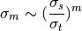
Where practical, the shape and thickness of a sample are carefully chosen to minimize as much unwanted multiple. This may be achieved by using a sample that is either [7]
Increasing the absorption cross section is not always attainable - due to the type of material in question - or desirable, due to the accompanying intensity losses becoming overly prohibitive.
The figure shows how a general double scattering process might occur. The neutron travels
a certain distance through the sample before the first scattering event in the volume
element  . The second scattering occurs in another volume element
. The second scattering occurs in another volume element  after a distance
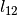 has been traversed following which the neutron travels a final length before
leaving the sample and being picked up by a detector.
after a distance
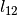 has been traversed following which the neutron travels a final length before
leaving the sample and being picked up by a detector.

We define the multiple scattering intensity,  , in terms of the total scattering intensity, 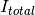, from number of orders of scattering intensity, 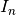, as:
, in terms of the total scattering intensity, 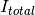, from number of orders of scattering intensity, 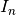, as:
(14)
Then, we see that to compute the multiple scattering, we must compute 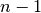 scattering intensity terms to subtract from the total, .
Let us first just consider the secondary scattering term,  . We again assume we have a homogeneous sample of a given shape that is fully illuminated by the incident beam.
Then, extending from Eq. (5), we have that the number of neutrons per unit solid angle scattered once by a volume element and then a second time by
a volume element of the sample and seen by a detector is given by:
. We again assume we have a homogeneous sample of a given shape that is fully illuminated by the incident beam.
Then, extending from Eq. (5), we have that the number of neutrons per unit solid angle scattered once by a volume element and then a second time by
a volume element of the sample and seen by a detector is given by:
(15)![dI_2(\theta_s) = J_0 \rho^2 \frac{d\sigma}{d\Omega} \left( \theta_1 \right) \frac{d\sigma}{d\Omega} \left( \theta_2 \right) \frac{exp \left[ -\mu (\lambda_1) l_1 + - \mu (\lambda_{12}) l_{12} + - \mu (\lambda_2) l_2 \right]}{l_{12}^2} dV dV](../_images/math/3c7ee265ef87a93c3c7b70b6e8e32ae43eb78edb.png)
where  is the angle between the incident path and scatter path from ,
is the angle between the incident path and scatter path from ,
 is the angle between scatter path from and scatter path from dV_2,
is the angle between scatter path from and scatter path from dV_2,
 is the angle between the incident path and scatter path from to the detector,
is the angle between the incident path and scatter path from to the detector,
 is the scattered wavelength from volume element ,
and the
is the scattered wavelength from volume element ,
and the  term is due to the inverse square law (that as the distance increases between and
, the solid angle subtended by at decreases as the inverse square of ).
term is due to the inverse square law (that as the distance increases between and
, the solid angle subtended by at decreases as the inverse square of ).
And the total secondary scattering intensity seen by a detector is:
(16)![I_2(\theta_s) &= \int_{V} \int_{V} dI_2 \\
&= J_0 \rho^2 \frac{d\sigma}{d\Omega} \left( \theta_1 \right) \frac{d\sigma}{d\Omega} \left( \theta_2 \right) \int_{V} \int_{V} \frac{exp \left[ -\mu (\lambda_1) l_1 + - \mu (\lambda_{12}) l_{12} + - \mu (\lambda_2) l_2 \right]}{l_{12}^2} dV dV](../_images/math/c9db0447d89ad30813338a6d7b1cbfd54feebbd2.png)
We can generalize this for  order of scatter terms as:
order of scatter terms as:
(17)![dI_i(\theta_s) = J_0 \rho^n \prod_{j=1}^{i} \frac{d\sigma}{d\Omega} \left( \theta_j \right) \frac{exp \left[ -\mu (\lambda_1) l_1 + - \sum_{j=1}^{i-1} \mu (\lambda_{j,j+1}) l_{j,j+1} + - \mu (\lambda_i) l_i \right]}{ \prod_{j=1}^{i-1} l_{j,j+1}^2} dV^{i}](../_images/math/7949db39c11aabf8dfefe9a83ea453e28cf8cf41.png)
and
(18)![I_i(\theta_s) &= \int_V ... \int_V dI_i \\
&= J_0 \rho^n \prod_{j=1}^{i} \frac{d\sigma}{d\Omega} \left( \theta_j \right) \int_V ... \int_V \frac{exp \left[ -\mu (\lambda_1) l_1 + - \sum_{j=1}^{i-1} \mu (\lambda_{j,j+1}) l_{j,j+1} + - \mu (\lambda_i) l_i \right]}{ \prod_{j=1}^{i-1} l_{j,j+1}^2} dV^{i}](../_images/math/4a846388bc56befcc261b4ac8b63f7b1b7c790fd.png)
Which then the multiple scattering up to the order scattering term is given as:
(19)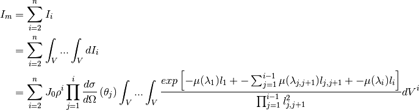
Thus, some of the difficulties in correcting multiple scattering arises from:
order of scattering we must perform  volume integrals
volume integrals  over the sample (although these terms tend to zero as explained in the introduction).
over the sample (although these terms tend to zero as explained in the introduction). due to energy transfer of the scattering event. scattering event. This requires knowledge of
due to energy transfer of the scattering event. scattering event. This requires knowledge of  , which is exactly what we are usually trying to measure (for diffraction)!
, which is exactly what we are usually trying to measure (for diffraction)! order of scatter should the correction be cutoff.
order of scatter should the correction be cutoff.To address (2) above, we can assume elastic scattering and then Eq. (19) becomes:
(20)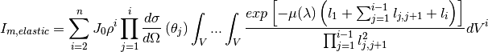
To address (3) above, we can assume isotropic scattering and then Eq. (19) becomes:
(21)![I_{m,isotropic} &= \sum_{i=2}^{n} J_0 \rho^i \left( \frac{\sigma}{4\pi} \right)^i \int_V ... \int_V \frac{exp \left[ -\mu (\lambda_1) l_1 + - \sum_{j=1}^{i-1} \mu (\lambda_{j,j+1}) l_{j,j+1} + - \mu (\lambda_i) l_i \right]}{ \prod_{j=1}^{i-1} l_{j,j+1}^2} dV^{i}](../_images/math/ee05b7b8a9057cfbeb59cb9ed93df90c7cd904a2.png)
To address (4), a typical assumption in the analytical method [6] [9] approaches is to assume that the ratio 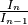 is a constant, 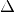, thus:
(23)
Then, with the assumption that  , Eq. (19) can be manipulated into a geometric series:
, Eq. (19) can be manipulated into a geometric series:
(24)
Similarly:
(25)
Subtracting Eq. (25) from Eq. (24), we have:
(26)
Which, solving for and based on the assumption , implying  , we arrive at:
, we arrive at:
(27)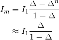
NOTE: Sears arrived at a separate equation for based on flat plate samples but supposedly general enough for any shape sample: 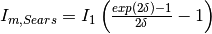.
However, comparisons of both equations for cylinders show that Eq. (27) is more accurate solution. [10]
From Eq. (27), we are left with calculating :
(28)![\Delta &= \frac{I_n}{I_{n-1}} = \frac{I_2}{I_1} \\
&= \frac{ J_0 \rho^2 \frac{d\sigma}{d\Omega} \left( \theta_1 \right) \frac{d\sigma}{d\Omega} \left( \theta_2 \right) \int_{V} \int_{V} \frac{exp \left[ -\mu (\lambda_1) l_1 + - \mu (\lambda_{12}) l_{12} + - \mu (\lambda_2) l_2 \right]}{l_{12}^2} dV dV }
{ J_0 \rho \frac{d\sigma}{d\Omega} \left( \theta_s \right) \int_{V} exp \left[ -\mu (\lambda_1) l_1 + -\mu (\lambda_2) l_2 \right] dV } \\
&= \frac{ \rho \frac{d\sigma}{d\Omega} \left( \theta_1 \right) \frac{d\sigma}{d\Omega} \left( \theta_2 \right) \int_{V} \int_{V} \frac{exp \left[ -\mu (\lambda_1) l_1 + - \mu (\lambda_{12}) l_{12} + - \mu (\lambda_2) l_2 \right]}{l_{12}^2} dV dV }
{ \frac{d\sigma}{d\Omega} \left( \theta_s \right) \int_{V} exp \left[ -\mu (\lambda_1) l_1 + -\mu (\lambda_2) l_2 \right] dV }](../_images/math/0fd404cbc08fc2710484887db7e90afd9501f987.png)
Using the isotropic approximation, we arrive at:
(29)![\Delta_{elastic} &= \frac{ \rho \left( \frac{\sigma_s}{4 \pi} \right)^2 \int_{V} \int_{V} \frac{exp \left[ -\mu (\lambda_1) l_1 + - \mu (\lambda_{12}) l_{12} + - \mu (\lambda_2) l_2 \right]}{l_{12}^2} dV dV }
{ \frac{\sigma_s}{4 \pi} \int_{V} exp \left[ -\mu (\lambda_1) l_1 + -\mu (\lambda_2) l_2 \right] dV } \\
&= \frac{ \rho \sigma_s A_2 V^2 }{ 4 \pi A_1 V } = \frac{ \rho V \sigma_s A_2 }{ 4 \pi A_1 }](../_images/math/8edb56a9935be3b985af9df09f6b8340c22b70d6.png)
where  is the secondary scattering absorption factor and
is the secondary scattering absorption factor and  is the single scattering absorption factor, equivalent to in Eq. (7).
The absorption factors can be further simplified by using the elastic scattering assumption from Eq. (8).
is the single scattering absorption factor, equivalent to in Eq. (7).
The absorption factors can be further simplified by using the elastic scattering assumption from Eq. (8).
We can now begin to solve for by taking Eq. (27) and substituting this into Eq. (14):
(30)
Solving this for  , we see that:
, we see that:
(31)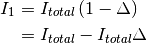
Thus, comparing Eq. (31) and Eq. (29) with Eq. (14), we see that:
(32)
The analytical approach has been further extended in a number of ways:
in Eq. (21). This can be realized by either producing a solvable equation for [6] or by using a model equation for . [11]Monte Carlo approaches are a “brute force” technique that does require more computational time than the analytical approaches yet does not suffer many of the drawbacks to the analytical approach. Such drawbacks included assumptions of isotropic scattering required to formulate the solvable equations, not being able to include the intermediate energy transfers for scattering, and easier flexibility to handle complicated shapes for sample, container, and/or sample environments.
In the Monte Carlo ray tracing technique, a virtual experiment is performed such that individual neutrons are put on a trajectory through a model of the instrument with scattering kernels defined for samples, containers, and other components of the instrument. Neutron histories are recorded so there is a clear distinction between single and multiple scattered neutrons and the multiple scattering correction is easily obtained from the result.
In some areas, such as small angle scattering, there may be useful approximations that can be applied that are not present for the more general wide angle scattering case. Again matters may become complicated, as for example small angle scatter followed by incoherent scatter from hydrogen can be more significant in blurring sharp features than double small angle scatter. For early considerations of multiple small angle scattering see for example [13] [14].
Indicates the energy modes that the algorithm can accommodate:
| Legend for Energy Mode | |
|---|---|
| E | Elastic |
| D | Direct |
| I | Indirect |
Indicates the technique used for calculating the absorption correction:
| Legend for Technique | |
|---|---|
| NI | Numerical Integration |
| MC | Monte Carlo Integration |
Options that describe what functions the algorithm is capable of, assumptions, and the output types:
| Functions | |
|---|---|
| L | Loads correction from file |
| FI | Full illumination of sample by beam |
| PI | Full or partial illumination of sample by beam |
| W | Outputs a corrected sample workspace |
| IA | Isotropic assumption is used for all orders of scattering |
| EA | Elastic scattering assumption is used |
| Algorithm | Energy Mode | Technique | Geometry | Input Units | Functions | Notes |
|---|---|---|---|---|---|---|
| CalculateCarpenterSampleCorrection | E | NI | Cylinder | Wavelength | IA,EA,FI | Only applicable to Vanadium
In-plane only
|
| CarpenterSampleCorrection | E | NI | Cylinder | Wavelength | IA,EA,FI,W | Only applicable to Vanadium
In-plane only
|
| LoadMcStas | E,D,I | MC | Any Shape | L | Loads McStas [15] v2.1 histogram or event data files.
Can extract multiple scattering and subtract from scattering in Mantid
|
|
| LoadMcStasNexus | E,D,I | MC | Any Shape | L | Loads McStas [15] v2.0 histogram data files.
Can extract multiple scattering and subtract from scattering in Mantid
|
|
| MayersSampleCorrection | E | NI+MC | Cylinder | TOF | IA,EA,FI,W | Uses Monte Carlo integration to evaluate the analytical integral. |
| MuscatData | I | MC | Cylinder or Flat Plate / Slab |  |
FI | |
| MuscatFunc | I | MC | Cylinder or Flat Plate / Slab | |
FI | |
| VesuvioCalculateMS | I | MC | Flat Plate / Slab | TOF | FI | Monte Carlo ray tracing algorithm for deep inelastic neutron scattering.
Calculates both total and multiple scattering output workspaces. Specific to
Vesuvio but possibly general.
|
| [1] | (1, 2, 3) NIST Center for Neutron Research tabulated neutron scattering lengths and cross sections. - https://www.ncnr.nist.gov/resources/n-lengths/list.html |
| [2] | (1, 2) A.K. Soper (2012). GudrunN and GudrunX manual. - https://www.isis.stfc.ac.uk/OtherFiles/Disordered%20Materials/Gudrun-Manual-2017-10.pdf |
| [3] | Mantid source code for NeutronAtom.cpp to define ReferenceLambda variable. |
| [4] | (1, 2)
|
| [5] | (1, 2)
|
| [6] | (1, 2, 3, 4)
|
| [7] | (1, 2) V.F. Sears (1975): Slow-neutron multiple scattering, Advances in Physics, 24:1, 1-45 |
| [8] | (1, 2) A.K.Soper, W.S.Howells and A.C.Hannon ATLAS - Analysis of Time-of-Flight Diffraction Data from Liquid and Amorphous Samples Rutherford Appleton Laboratory Report (1989): RAL-89-046 |
| [9] |
|
| [10] | (1, 2, 3, 4, 5)
|
| [11] |
|
| [12] |
|
| [13] | J.Schelten & W.Schmatz, J.Appl.Cryst. 13(1980)385-390 |
| [14] | J.R.D.Copley J.Appl.Cryst 21(1988)639-644 |
| [15] | (1, 2) McStas: A neutron ray-trace simulation package website |
| [16] | (1, 2)
|
| [17] | (1, 2) FORTRAN source code for MUSCAT as 3rd party software in Mantid. |
Category: Concepts
![I_{m,elastic+isotropic} &= \sum_{i=2}^{n} J_0 \rho^i \left( \frac{\sigma}{4\pi} \right)^i \int_V ... \int_V \frac{exp \left[ -\mu (\lambda) \left( l_1 + \sum_{j=1}^{i-1} l_{j,j+1} + l_i \right) \right]}{ \prod_{j=1}^{i-1} l_{j,j+1}^2} dV^{i}](../_images/math/d4cdd7dd3ed7e25564bfa57e914031a1bdc0b79e.png)